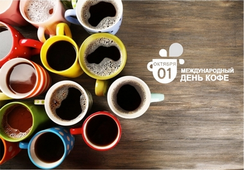

1 октября - Международный день кофе

Долгое время у нашего любимого напитка 💕 не было официального праздника:
в Америке день кофе отмечали 29 сентября, в Швейцарии — 16 мая, а в Ирландии
до сих пор гуляют целую неделю, посвященную Айриш кофе.
Только в 2015 году Международная Кофейная Организация
(ICO) официально объявила 1 октября Международным днем кофе.
Культ кофе
«Янки лишили ее удовольствия пить настоящий кофе с сахаром и сливками, и одного этого было уже достаточно, чтобы она возненавидела их всей душой.»
Маргарет Митчелл, «Унесённые ветром»
«Не кладите в утренний кофе прошлых воспоминаний. Лучше добавьте в него сахар будущих надежд.»
Неизвестный автор
«Крепкий кофе в больших количествах — вот что необходимо мне, чтобы проснуться. Он согревает и придает мне силы. Иногда он причиняет сладкую боль, но я скорее предпочту страдать от нее, чем откажусь от кофе.»
Наполеон Бонапарт
«Ради кофе можно пойти на всё. Даже на работу.»
Билл Гейтс
Далее...